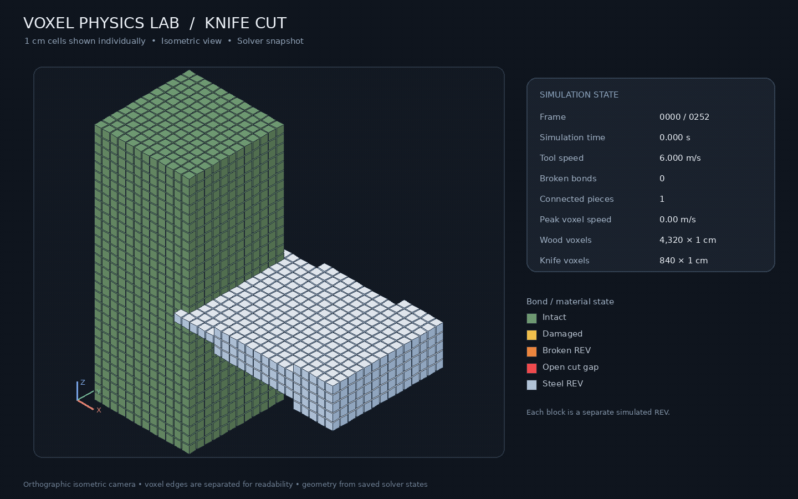

01
Voxel Physics Lab
Материя из вокселей и связей. Контакт, направление волокон, деформация и разрушение — в одной экспериментальной модели.
Создаю симуляции, приложения
и инструменты с локальным ИИ.

Три проекта с разными задачами.
В каждом — своя инженерная глубина.
Материя из вокселей и связей. Контакт, направление волокон, деформация и разрушение — в одной экспериментальной модели.
Справочник, который работает без сети: локальная языковая модель, поиск по документам, OCR и ссылки на исходные фрагменты.
Пайплайн экспериментов с движением: суставные углы, последовательности, автоэнкодеры и сравнение моделей.
Попробуйте каждый прямо здесь — или откройте его в отдельной вкладке.
Разработка и совместные проекты в Уфе, Башкортостане и удалённо.